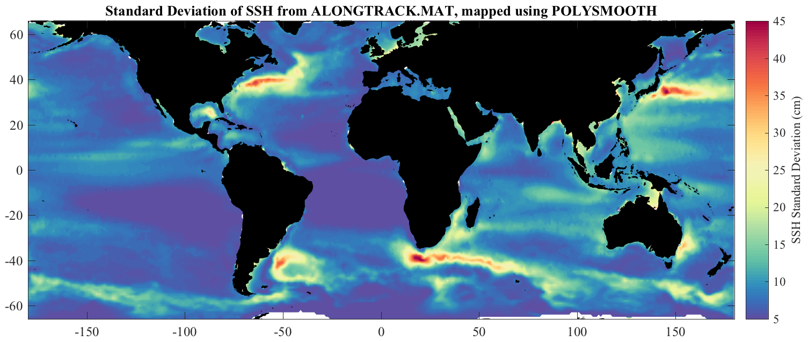

ABOUT_JTOPO One-sixth degree global topography, from Smith and Sandwell + IBCAO. _______________________________________________________________________  _______________________________________________________________________ JTOPO is a matfile containing smoothed one-sixth degree global topography based on the Smith and Sandwell database version together with the International Bathymetric Chart of the Arctic Ocean (IBCAO). LOAD JTOPO loads the structure JTOPO, with the following fields: jtopo.about Pointer to this document jtopo.lat Array of latitudes [1024 x 1] jtopo.lon Array of longitudes [1 x 2160] jtopo.topo Matrix of topography [1024 x 2160] Typing 'use jtopo' maps these fields into variables in the current workspace, e.g. 'use jtopo, pcolor(lon,lat,topo), shading interp'. TOPO is in units of kilometers and is positive for above sea level, and negative for below sea level. LAT is uniformly spaced from -80.666 to 89.833, and LON is uniformly spaced from -180 to 179.8333. These are *grid-centered* values, that is, they indicate midpoints of the topography cells. JTOPO is distributed with JLAB, available at http://www.jmlilly.net. See also READTOPO, which reads in any region of the Smith and Sandwell data, ABOUT_IBCAO, and TOPOPLOT, which makes simple plots using JTOPO. __________________________________________________________________ Processing The one-minute Smith and Sandwell data, and 1/2 minute IBCAO data, are smoothed to one-sixth of a degree by averaging in 1/6 x 1/6 bins. Smith and Sandwell is defined from -80.738 and 80.738, while IBCAO is defined from 64 N to 90 N. In the overlap region, from 64 to 84.738 N, the root-mean-square different between the two datasets is about 50 m. JTOPO uses a linear blend to resolve the small discrepencies in the overlap region. From 64 to 84.738 N, JTOPO transitions from being all Smith and Sandwell, to all IBCAO, with a weighted average in between. __________________________________________________________________ Data and documentation This dataset is based on the Smith and Sandwell Global Topography Dataset v. 18.1 and IBCAO v. 3.0, which are included with JDATA. The source and reference for the Smith and Sandwell dataset are http://topex.ucsd.edu/WWW_html/mar_topo.html Smith, W. H. F., and D. T. Sandwell, Global seafloor topography from satellite altimetry and ship TOPO soundings, Science, v. 277, p. 1957-1962, 26 Sept., 1997. The source and reference for the IBCAO dataset are http://www.ngdc.noaa.gov/mgg/bathymetry/arctic/grids/version3_0/ Jakobsson, M., L. A. Mayer, B. Coakley, J. A. Dowdeswell, S. Forbes, B. Fridman, H. Hodnesdal, R. Noormets, R. Pedersen, M. Rebesco, H.-W. Schenke, Y. Zarayskaya A, D. Accettella, A. Armstrong, R. M. Anderson, P. Bienhoff, A. Camerlenghi, I. Church, M. Edwards, J. V. Gardner, J. K. Hall, B. Hell, O. B. Hestvik, Y. Kristoffersen, C. Marcussen, R. Mohammad, D. Mosher, S. V. Nghiem, M. T. Pedrosa, P. G. Travaglini, and P. Weatherall, The International Bathymetric Chart of the Arctic Ocean (IBCAO) Version 3.0, Geophysical Research Letters, doi: 10.1029/2012GL052219 __________________________________________________________________ License and Copyright JTOPO.MAT is distributed with JDATA for RESEARCH AND NON-PROFIT USE ONLY, in accordance with the copyright statement for the Smith and Sandwell dataset. For details, see TOPO_COPYRIGHT. No copyright or policy is specified in the IBCAO documentation. __________________________________________________________________ Dataset creation For completeness, the m-file ABOUT_JTOPO also contains the processing steps used in the creation of JTOPO.MAT. If you wish to do this yourself, with JLAB on your search path, 'about_jtopo --create' will recreate the JTOPO.MAT dataset by reading in and averaging the two topographic datasets. This will take a while. For this to work you will need to have the JDATA folder containing file 'topo_18.1.img' and 'ibcao.mat' downloaded and on your Matlab search path. __________________________________________________________________ See also READTOPO, TOPOPLOT, JDATA. 'about_jtopo --f' generates the sample figure shown above. Usage: about_jtopo about_jtopo --create __________________________________________________________________ This is part of JLAB --- type 'help jlab' for more information (C) 2014--2015 J.M. Lilly --- type 'help jlab_license' for details